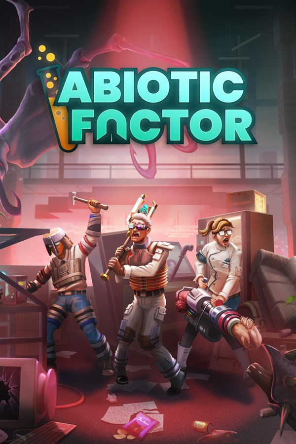

Abiotic Factor
Every archived year-end list appearance, including placement and points earned.
About the Game
As a member of the science team trapped by a trans-dimensional experiment gone sideways, you must forge a path to safety. Employ your big-brain talents to stay alive in a doomed facility, use a spectrum of scavenged resources, craft weird-science gadgets, hack into new sectors, and escape to the surface with your team … Explore every inch of the underground GATE Cascade Research Facility, from the ravaged Office Sector to the heavy machinery and mines of Manufacturing, through the secret labs – and dimensions beyond – in a retro world re-imagined for modern multiplayer co-op. Craft an assortment of smart science tools, food, gear, and weapons to defeat denizens from a myriad of worlds – gain the advantage against alien enemies and paranormal ‘problems’ by getting sneaky, smart or downright devious. Grow your geek skills and stats to develop a carefully balanced interplay of strengths and weaknesses. Select your traits (both good and bad) based on your scientist’s hobbies and talents (or lack thereof) – are you a fast learner? Do you need to use the restroom more often? Are you a restless sleeper? Or maybe you cook like a pro? Customize to your heart’s content – as long as your tie matches. And just remember egghead, you’re super-smart, not superhuman. After all, you’re with the science team.
| Released | 2025-07-22 |
|---|---|
| Developer | Deep Field Games |
| Publisher | PlayStack |
| Genres | Action, Shooter, Adventure, RPG, Simulation |
| Platforms | PC |
SingleplayerSteam AchievementsMultiplayerCo-opFirst-PersonSci-fiPartial Controller SupportFPSOnline Co-OpExplorationSandboxSurvival
Where to Buy
Game information provided by RAWG.
Points by Year
List History
| Year | Source | List | Placement | Points |
|---|---|---|---|---|
| 2025 | Eurogamer | The 50 best games of 2025, ranked | 28 | 1 |
| 2025 | NPR | The best games of 2025, picked by NPR's staff | Unranked | 1 |